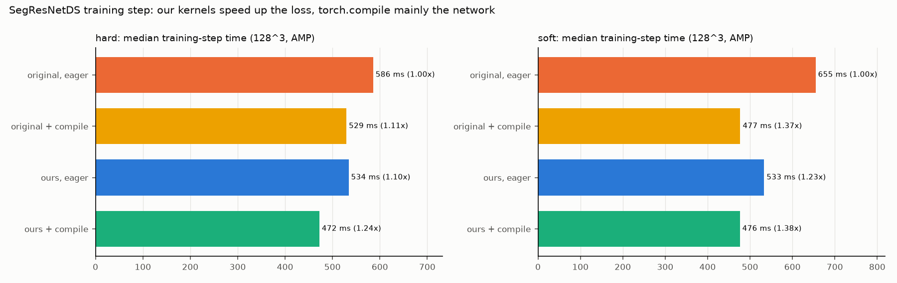
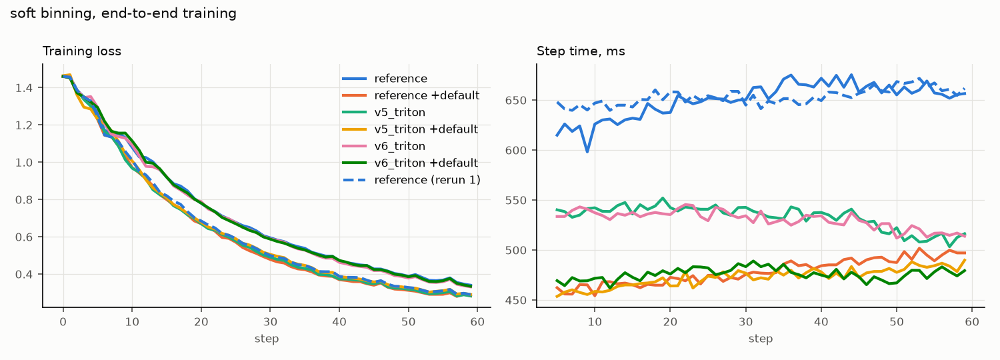

Sprints: S8, S11
6. Training: the loss inside the real step, and torch.compile
A 30-75x faster loss does not make training 30-75x faster. This page measures the loss
inside the paper's actual training step and explains the numbers, including how our
kernels and torch.compile combine.
The end-to-end harness
ace_bench/e2e.py rebuilds the paper's training setup: MONAI SegResNetDS (32
filters, deep supervision with 4 output levels), loss 0.33 * (Dice + CE + mL1-ACE)
summed over the levels by DeepSupervisionLoss, AdamW, AMP (fp16). Inputs are
synthetic but learnable volumes, identical batches for every implementation.
128class PaperLoss(_Loss):
129 """0.33 * (Dice + CE + mL1-ACE), as ``*l1ace_dice_ce.yaml`` upstream."""
130
131 def __init__(self, impl: str, binning: Binning) -> None:
132 super().__init__()
133 from monai.losses.dice import DiceLoss
134
135 self.impl = impl
136 self.ace_config = ACEConfig(binning=binning, to_onehot_y=True)
137 self.dice = DiceLoss(
138 to_onehot_y=True,
139 softmax=True,
140 squared_pred=True,
141 smooth_nr=0,
142 smooth_dr=1e-5,
143 )
144 self.ace_sum = torch.zeros(()) # GPU tensor: no host sync inside the step
145
146 def forward(self, logits: torch.Tensor, labels: torch.Tensor) -> torch.Tensor:
147 ce = F.cross_entropy(logits.float(), labels[:, 0].long())
148 ace = ace_loss(logits, labels, self.ace_config, impl=self.impl)
149 # summed over deep-supervision levels; read after the timed step
150 self.ace_sum = self.ace_sum.to(ace.device) + ace.detach().float()
151 loss: torch.Tensor = 0.33 * (self.dice(logits, labels) + ce + ace)
152 return loss
The paper's combined loss; only the impl of the ACE term changes between runs. The ACE value is accumulated as a GPU tensor (a Python float would force a host sync every step).
Each training run happens in a fresh process, measures every step with CUDA events, and records loss, ACE term, step time and peak memory. Separate probes find the largest cubic patch that still fits in the 15 GB of the T4.
178def _forward(model: Any, loss_fn: Any, mode: CompileMode) -> Forward:
179 """Network + deep-supervision loss, optionally under ``torch.compile``."""
180
181 def fwd(image: torch.Tensor, labels: torch.Tensor) -> torch.Tensor:
182 loss: torch.Tensor = loss_fn(model(image), labels)
183 return loss
184
185 if mode == "none":
186 return fwd
187 compiled: Forward = torch.compile(fwd, mode=None if mode == "default" else mode)
188 return compiled
Network + deep-supervision loss, optionally under torch.compile (the whole step's forward, so the network is compiled too).
Concept: Amdahl's law
If a part takes a fraction s of the step and becomes x times faster, the step
becomes 1 / ((1 - s) + s / x) times faster. With the loss at 10-19% of the original
step and 30x faster: 1 / (0.85 + 0.15/30) = 1.17x. That is what we measure:

Proves: our kernels speed up the loss part; compile speeds up mainly the network; for hard binning the two add up (472 ms), for soft compile already fuses the original's loss well.
torch.compile vs our kernels
All four numbers are relative to the same baseline: the original loss, no compile. "+ compile" compiles network and loss together, so it includes compile's gains on the network, which our work does not touch:
| binning | impl | median step ms | peak MiB |
|---|---|---|---|
| hard | reference | 585.7 | 3606.0 |
| hard | v6_triton | 534.0 | 3607.0 |
| hard | reference +default | 529.4 | 3496.0 |
| hard | v5_triton | 528.7 | 3607.0 |
| hard | v5_triton +default | 472.5 | 3496.0 |
| hard | v6_triton +default | 472.3 | 3496.0 |
| soft | reference | 654.6 | 3647.0 |
| soft | v5_triton | 537.1 | 3607.0 |
| soft | v6_triton | 533.2 | 3607.0 |
| soft | reference +default | 476.9 | 3498.0 |
| soft | v6_triton +default | 476.0 | 3496.0 |
| soft | v5_triton +default | 472.6 | 3496.0 |
How to read it:
- Ours alone (eager) replaces only the loss: 1.10x (hard) / 1.23x (soft), capped by the loss's share of the step.
- Compile alone speeds up mainly the network (it fuses norm + activation layers), plus some of the loss: 1.11x / 1.37x.
- Hard: the gains add up. Compile saves ~56 ms (network), our kernels ~52 ms (loss); together ~113 ms (1.24x). They act on different parts.
- Soft: they do not. Compile already makes the original soft loss much faster (Sprint 2: 4.7x in isolation), so after compiling, the soft loss is a small share and our kernels add ~1 ms. Open question: in isolation the compiled original soft loss is still ~8x slower than ours (39 vs 5 ms), which predicts a ~15 ms gap per step; measured ~1 ms. Candidates: fp16 logits under AMP, overlap inside the compiled graph, single-run noise. Profiling the loss inside the compiled step would settle it.
What compile does not give, and ours does:
| original + compile | ours | |
|---|---|---|
| peak memory of the loss (kits23 soft) | 688 MiB | 64 MiB |
| 16 classes, soft (amos22) | 2694 ms (2x slower than eager) | 20 ms |
| warm-up | seconds of compilation, recompiles on new shapes | none |
| users who train eagerly | no gain | full gain |
And the graph breaks (torch._dynamo.explain): the 8 breaks per step come from MONAI's
DiceLoss (torch.arange(...).tolist(), 2 per level), for every ACE implementation.
The original ACE loss itself traces fine; v5 added 6 breaks; v6 (custom ops) adds 0:
| impl | binning | graphs | graph_breaks | reasons |
|---|---|---|---|---|
| reference | hard | 9 | 8 | Data dependent operator |
| v5_triton | hard | 15 | 14 | Attempted to use tensor creation function with requires_grad=True; Data dependent operator; using `torch.autograd.grad` with `torch._dynamo.config.trace_autograd_ops=False` |
| v6_triton | hard | 9 | 8 | Data dependent operator |
| reference | soft | 9 | 8 | Data dependent operator |
| v5_triton | soft | 15 | 14 | Attempted to use tensor creation function with requires_grad=True; Data dependent operator; using `torch.autograd.grad` with `torch._dynamo.config.trace_autograd_ops=False` |
| v6_triton | soft | 9 | 8 | Data dependent operator |
Is training unchanged? The control run
The loss curves of ours and the original differ by a few percent after a few dozen steps. Is that a bug? The control answers it: the original trained twice with the same seed and batches also diverges, because cuDNN convolutions, atomics and AMP are not bit-deterministic and training amplifies tiny differences:

Proves: ours stays within the original's own run-to-run spread (rerun max difference 18%, ours 4.6%); step 0 is identical (8e-8), i.e. the forward is exact.
Larger patches fit
| impl | binning | patch | status | peak MiB |
|---|---|---|---|---|
| reference | hard | 208 | ok | 11601.0 |
| reference | hard | 224 | oom | |
| v5_triton | hard | 208 | ok | 11601.0 |
| v5_triton | hard | 224 | ok | 14189.0 |
| v5_triton | hard | 240 | oom | |
| v6_triton | hard | 208 | ok | 11601.0 |
| v6_triton | hard | 224 | ok | 14189.0 |
| v6_triton | hard | 240 | oom | |
| reference | soft | 208 | ok | 11756.0 |
| reference | soft | 224 | ok | 14378.0 |
| reference | soft | 240 | oom | |
| v5_triton | soft | 208 | ok | 11601.0 |
| v5_triton | soft | 224 | ok | 14189.0 |
| v5_triton | soft | 240 | oom | |
| v6_triton | soft | 208 | ok | 11601.0 |
| v6_triton | soft | 224 | ok | 14189.0 |
| v6_triton | soft | 240 | oom |
Try it
$ uv run python -m ace_bench.e2e bench/configs/e2e_cpu_smoke.yamla tiny CPU version of the whole pipeline (curves, probes, compile, summary) in ~1 minute; not a result, a pipeline check